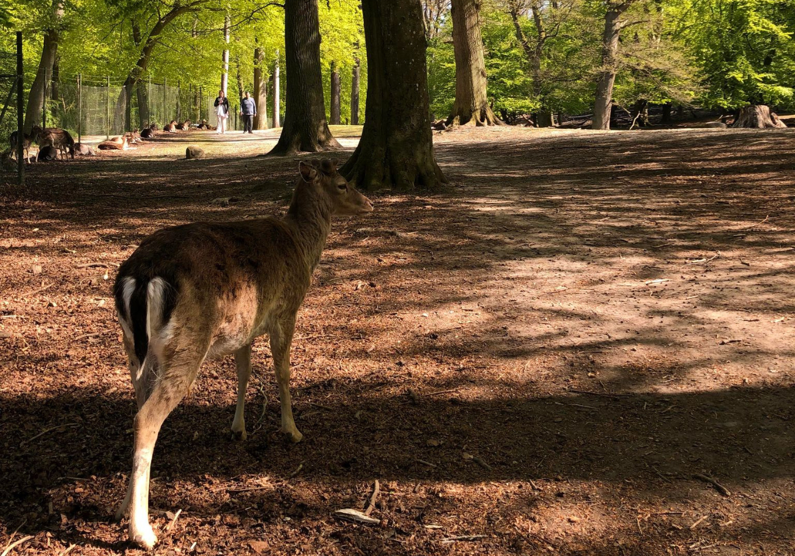
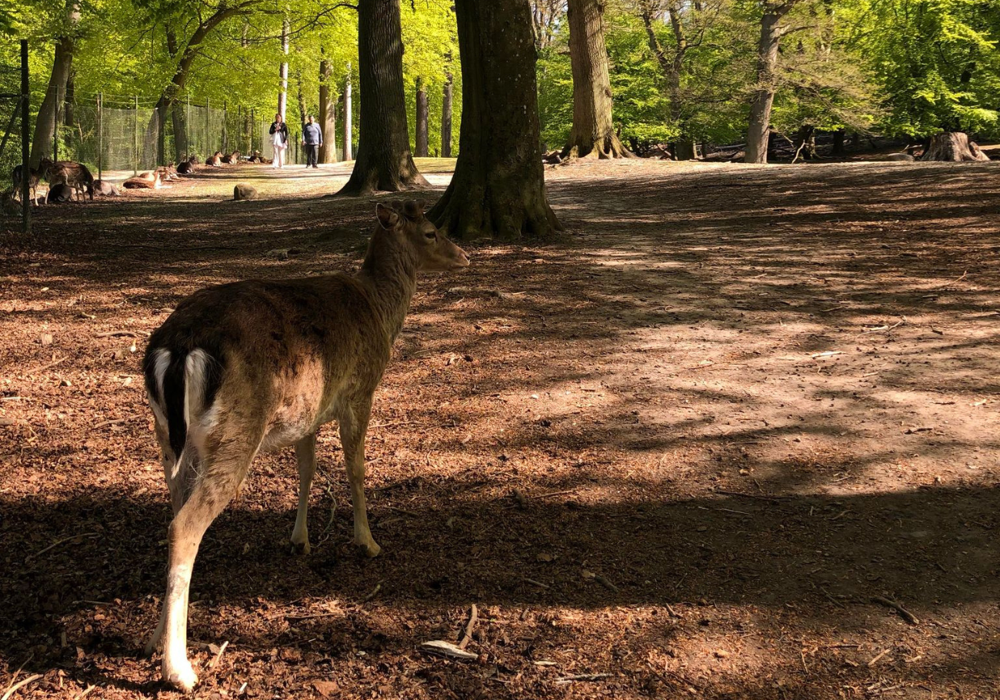

Marselisborgskovene er et af de mest besøgte naturområder i Danmark, og det er et populært sted for udendørsaktiviteter som motionsløb, cykling og vandreture.
Skoven byder på et varieret og kuperet terræn, der egner sig godt til udfordrende løbeture. Der er flere afmærkede løberuter, der strækker sig gennem skoven og giver løbere mulighed for at nyde den smukke natur samtidig med at de får motion. Når du besøger marselisborg skov skal du et forbi dyrhaven, hvor du møder dådyr helt tæt på. Hvis solen er for varm, så har du kun få 100 meter ned til stranden, så du har rig mulighed for at gøre lige hvad du vil.


 

Marselisborg skov byder på mange forskellige aktiviteter i smuk natur. Du kan blandt andet nyde 25km Mountainbike-spor i smukt kuperet terræn. Du kan tage et afbræk fra byen med en eftermiddags løbetur, hvor du blandt andet møder forskellige dyreliv, mens du kan høre bølgerne og diverse fugle synge. Brug skoven til at komme i ét med naturen og mærk hvordan tankerne forsvinder.
Få 100 meter inde i skoven møder du indgangen til dyrehaven. Inden du går ind skal du dog huske på, at det ikke er kæledyr, men vildedyr. Har du mad med, så anbefaler vi ikke at du fordre dem, da det kan skabe ekstremt opmærksomhed og du bliver hurtigt omringet af store dådyr. Bliver du træt af dådyrene, kan du tage et smut forbi vildsvinene, eller bare nyde de lange snorede stier i kuperet terræn i smukke omgivelser.
Hvis du kommer langt væk fra eller har hele familien på besøg, så er der fine parkeringsmuligheder lige foran indgangen.